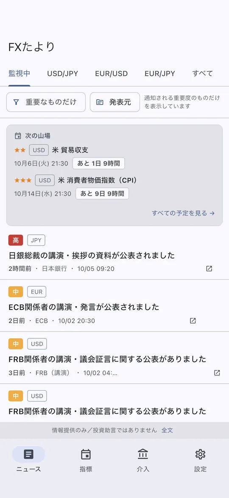
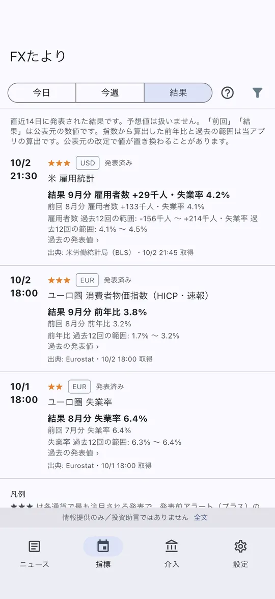
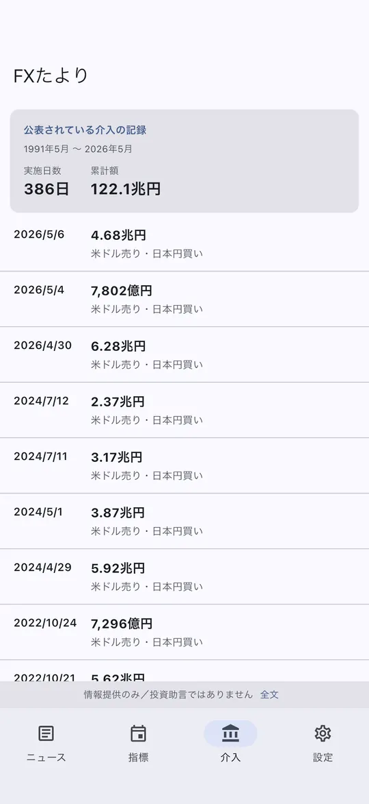

iOS アプリ ／ Android はテスター募集中
記事ではなく、
発表そのもの。
中央銀行・政府機関の公式発表を直接監視して、為替に影響しうる公表があった事実と原文へのリンクをお知らせします。
- 日銀・財務省・金融庁
- FRB・ECB・BOE など
- 為替介入の記録
情報提供のみ／投資助言ではありません。無料で使えます。任意の有料プラン「プラス」は料金をご覧ください。
金融政策決定会合の結果が公表されました
12:03 ・ 情報提供のみ／投資助言ではありません
外国為替平衡操作（為替介入）の実施状況が公表されました
19:00 ・ 情報提供のみ／投資助言ではありません
実際の通知と同じ構成の表示イメージです。本文は当アプリが独自に付与した分類ラベルで、発表機関の文章ではありません。タップすると原文が開きます。
アプリの画面



表示イメージです（内容は撮影時点のもの）。情報提供のみ／投資助言ではありません。
見ているのは、当局の公式サイトそのもの
日本の3機関（日本銀行・財務省・金融庁）と、海外の中央銀行・政府機関の公式サイトとフィードを、直接監視しています。
日本
- 日本銀行
- 財務省
- 金融庁
米国
- FRB 報道発表
- FRB 講演
- FRB 議会証言
欧州・英国
- 欧州中央銀行（ECB）
- イングランド銀行 発表
- イングランド銀行 講演
オセアニア・カナダ
- カナダ銀行
- オーストラリア準備銀行
経済指標の日程と数値の出典
上の11ソースは「公表があったこと」を知らせる通知の監視先です（ニュージーランド準備銀行は利用条件で自動のアクセスが認められていないため、通知の対象にしていません。政策金利と会合の日程は人が公表を確かめて載せています）。経済指標カレンダーの日程と数値は、次の統計機関が公開している予定表とデータから毎日取り込みます。
- 米国経済分析局（BEA）・労働統計局（BLS）
- 英国国家統計局（ONS）
- 日本総務省統計局・内閣府・財務省（貿易統計）
- ユーロ圏Eurostat
- 豪州オーストラリア統計局（ABS）
- カナダカナダ統計局（Statistics Canada）
- 為替レート欧州中央銀行（ECB）ユーロ参照為替レート
- 政策金利各中央銀行の公表値（確認できた機関のみ）
本アプリは各発表機関・統計機関とは一切関係がなく、公式アプリ・公式サービスではありません。 各機関のロゴや紋章は使用していません。各機関が利用条件として求める出典表示は、アプリ内のカレンダー末尾に常時掲載しています。
発表元を直接見る、という設計
報道記事を経由せず、発表元のサイトとフィードを定期的に確認して、公表があったことをお知らせします。確認の間隔や配信の状況によって通知は遅れることがあり、報道より早く届くことを保証するものではありません。
公式サイトを直接見る
各国の中央銀行・政府機関が自分で出しているページとフィードを、定期的に確認します。ニュース配信会社は経由しません。
為替に関わるものだけ選ぶ
関係する通貨と重要度を機械的に判定し、あなたが監視している通貨ペアに関わる公表だけを残します。
公表があったことを知らせる
分類ラベルと発表元、原文へのリンクを通知します。内容の解釈や見通しは付けません。
できること
通知が主役ですが、届いた後に確かめる場所も用意しています。
ニュース一覧
届いたものを、条件で絞って見る
重要度・発表元・監視している通貨ペアで絞り込めます。先頭には「次の山場」として、これから予定されている重要な発表までの残り時間が出ます。
経済指標カレンダー
今日・今週・結果の3つの見方
日本・米国・英国・ユーロ圏・豪州・カナダの主要統計と各国の政策金利発表の日程を、統計機関の予定表から毎日取り込みます。発表後は「前回」「結果」と過去の発表値の範囲を表示します。予想値は載せません。
為替介入トラッカー
財務省が公表した実績を、そのまま
実施日・金額・通貨ペアを、事実だけで並べています。無料では直近20件、プラスでは1991年からの全386件をさかのぼれます。
通貨の値動き・政策金利
換算した事実を、順位を付けずに
欧州中央銀行の参照為替レートから換算した1週間・1か月・3か月の変化率と、各国の政策金利・通貨ペアごとの金利差。通貨コード順に並べ、強弱の評価や売買の示唆は付けません。
ホーム画面ウィジェット
次の発表を、アプリを開かずに
監視中の通貨の次の重要な発表と日時をホーム画面に置けます（iOS 17 以降）。ウィジェット自体は通信せず、アプリが取り込んだ予定だけを表示します。
通知の設定
鳴りすぎないようにする
監視する通貨ペア（無料3つ・プラス10ペア）、通知しきい値、発表元ごとに通知を止める設定、深夜に止める「おやすみモード」、週の初めに予定をまとめる週次ダイジェスト（任意）、届くか確かめるテスト通知。重要な指標の30分前・5分前に届く発表前アラートはプラスの機能です。
経済指標は、統計機関の予定表から
日程も数値も、各機関が自分で公開しているものだけを取り込みます。市場予想（コンセンサス）は扱いません。
載せるもの
日程・前回・結果・過去の範囲・出典
米CPI・雇用統計、英CPI、ユーロ圏HICP、豪CPI、加CPI は発表後に「結果」が入り、次回の行に「前回」として残ります。「過去12回の範囲」は、いつもはどのくらいの値かという事実です。各行に出典の機関名を示し、指標が何を測るかの解説にも辿れます。
載せないもの
市場予想・コンセンサス
予想値は調査会社の有料データで、転載できません。それ以上に、予想との差で「良い・悪い」を言い始めると、このアプリが投資助言に近づきます。代わりに過去の範囲という事実だけを置き、判断はお任せします。
為替介入の記録を、そのまま一覧に
財務省が公表している外国為替平衡操作の実績を、加工せずに並べています。
件数・累計額は、2026年10月時点の財務省の公表に基づきます。
載せるもの
実施日・金額・通貨ペア
財務省が公表した事実だけです。数字の単位は億円と兆円で読みやすく整えていますが、値そのものは変えていません。無料では直近20件、プラスでは全件を表示します。
載せないもの
「前回から何日」「そろそろか」
経過日数は事実ではありますが、投資判断を促す読み方を誘発するため、意図的に出していません。日付は画面に出ているので、必要な方はご自身でご確認ください。
出典：財務省「外国為替平衡操作の実施状況」（政府標準利用規約 第2.0版）
Android 版のテスターを募集しています
Google Play で公開するために、14日間のテストにご協力いただける方を探しています。インストールしたままにしていただくだけで、毎日使う必要はありません。
- Google Play で使っている Google アカウントで、テスター用の Google グループに参加する
- テストのページで「テスターになる」を押す（グループに入ってから数分かかることがあります）
- Google Playからインストールし、14日間はアンインストールしない
グループからメールが届くことはなく、ほかの参加者にメールアドレスが見えることもありません。当方はテスターの管理のためにメールアドレスを閲覧できます（プライバシーポリシー 3.3）。製品版の公開後、グループは閉じて削除します。
料金
無料のままで、すべての発表元の通知と、経済指標・為替介入の画面が使えます。プラスは、通知を増やす方向の機能を足すものです。
無料
0円
アカウント登録なし。広告なし。
- 公式発表の通知すべての発表元
- 経済指標カレンダー・結果すべて
- 監視できる通貨ペア3つまで
- 発表前アラート—
- 為替介入の履歴直近20件
- おやすみモードあり
FXたより プラス
月額300円自動更新・任意
価格はストアの表示が正です。アプリ内の「FXたより プラスについて」から購入できます。
- 公式発表の通知すべての発表元
- 経済指標カレンダー・結果すべて
- 監視できる通貨ペア10ペアすべて
- 発表前アラート30分前・5分前
30分前のみに減らす設定あり - 為替介入の履歴全386件（1991年〜）
- おやすみモードあり
お支払いは購入の確定時に Apple ID に請求されます。期間終了の24時間前までに解約しない限り、自動的に更新されます。 解約は iPhone の「設定」→ ご自身の名前 →「サブスクリプション」からいつでも行えます。アプリを削除しても解約にはなりません。 有料プランを購入しても、公表された事実そのものが増減することはありません。
しないこと
できないのではなく、しないと決めていることです。
- 報道機関の記事本文は載せません 著作権のためです。届く見出しは、当アプリが公表内容から独自に付与した分類ラベルであり、発表機関や報道機関の文章ではありません。内容は必ず原文でご確認ください。
- 売買の推奨や相場の見通しは示しません 金融商品取引法上の投資助言・投資勧誘を行うものではありません。相場が上がるか下がるか、買うべきか売るべきかといった判断は一切表示しません。
- 危機感を煽る演出はしません 赤い警告色や派手な音で急かすことはしません。事実と日付だけを、落ち着いた形で置きます。
- 個人を特定する情報は集めません 氏名・メールアドレス・電話番号・住所・取引口座・取引履歴・資産の情報は収集しません。保存するためのデータベース項目も設けていません（計算機能の入力値は端末内だけで使い、保存・送信しません）。
正直に書いておくこと
インストールする前に知っておいていただきたい制約です。
- 通知は、公表元の配信状況・通信環境・端末やOSの設定・プッシュ通知基盤の状況により、遅延し、または届かないことがあります。即時性・確実性は保証しません。
- 重要度、影響する通貨、分類ラベル、AIによる翻訳は、機械的に判定・生成したものです。誤り、漏れ、遅れを含むことがあります。
- 経済指標の日程は各機関の予定表から取り込んでいますが、機関の都合で変わることがあります。「時刻未定」「暫定」「推定」と表示された日程は確定していません。
- 「前回」「結果」「過去の範囲」、通貨の値動き、政策金利差には、公表元の数値から当アプリが算出・換算した派生値を含みます。市場の実勢や各機関の公表値と異なる場合があり、後日改定されることがあります。
- 統計機関のデータ提供が止まったり形式が変わったりすると、その機関の「結果」が一時的に入らないことがあります。日程・通知・他の機関には影響しません。
- 本アプリは各発表機関とは一切関係がなく、各機関の公式アプリ・公式サービスではありません。
- 個人開発のアプリです。不具合の修正や問い合わせへの返信に、お時間をいただくことがあります。
よくある質問
お問い合わせの前に、こちらもご確認ください。
料金はかかりますか
無料で使えます。すべての発表元の通知、経済指標カレンダーと結果、為替介入の直近20件、監視ペア3つまでが無料の範囲です。
任意の有料プラン「FXたより プラス」（月額300円・自動更新）で、監視ペアが10すべてに、重要な指標の発表前アラート、為替介入の全件表示が加わります。詳しくは料金をご覧ください。
予想値（市場コンセンサス）は見られますか
載せていません。予想値は調査会社の有料データで、転載できないことに加え、予想との差で評価を始めると投資助言に近づくためです。代わりに「前回」「結果」と「過去の発表値の範囲」という事実だけを表示します。
どんな情報が集められますか
氏名・メールアドレス・電話番号・住所・取引口座・取引履歴・資産に関する情報は収集しません。通知を届けるために必要な技術的な情報（通知の宛先を識別するトークンなど）のみを取り扱います。
プッシュ通知の配信には Google の Firebase Cloud Messaging を利用しており、通知を有効にすると、そのトークンなどが Google（米国）および当方のサーバー（Cloudflare／米国・アジア）へ送信されます。有料プランの決済は Apple または Google が処理し、当方が持つのは有効期限と、購入を確かめるための取引の識別子（Google Play はそのハッシュ値）だけです。詳しくはプライバシーポリシーをご確認ください。
中央銀行の公式アプリですか
いいえ。本アプリは日本銀行、財務省、金融庁、米連邦準備制度理事会、欧州中央銀行その他の発表機関とは一切関係がなく、各機関の公式アプリ・公式サービスではありません。
ニュース記事は読めますか
報道機関の記事本文は掲載していません。通知や一覧からは、発表機関が公開している原文のページを開けます。
対応している通貨ペアは
USD/JPY、EUR/USD、EUR/JPY、GBP/JPY、GBP/USD、AUD/JPY、AUD/USD、USD/CAD、NZD/JPY、NZD/USD の10ペアです。無料では3つまで、プラスでは10すべてを同時に監視できます。
Android 版はありますか
現在はクローズドテストの段階です。テスターを募集しています。公開の時期が決まりましたらこのページでお知らせします。
ホーム画面ウィジェットの置き方は
iOS 17 以降で、アプリを一度開いたあと、ホーム画面を長押し →「＋」→「FXたより」を選びます。表示されるのは、アプリが取り込んだ次の重要な発表と日時です。ウィジェット自体は通信しないため、予定を更新するにはアプリを開いてください。
通知が届きません
まずアプリの「設定」からテスト通知をお試しください。端末側で通知が許可されていない場合は、設定画面から端末の通知設定を開けます。それでも届かない場合は、「設定」に表示される端末IDを添えてご連絡ください。調査が早くなります。
公表があったことを、静かにお知らせします
判断するのはご自身です。本アプリは、判断に必要な公表があったことをお伝えするところまでを担当します。
iOS 15 以降 情報提供のみ／投資助言ではありません